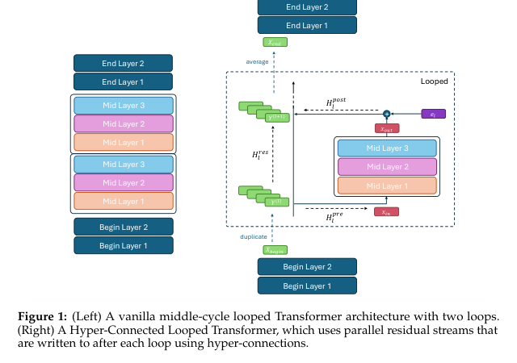

Parameter-Efficient Design for Edge and On-Device Deployment
While standard looped models reuse layers, fully recurrent architectures can sometimes struggle to capture the strict sequential feature extraction needed at the very early (embedding/lexical) and very late (projection/decoding) stages of inference.
Zeitoun et al. introduced the Hyper-Connected Looped Transformer (Hyperloop Transformer). It aims to maximize model quality under strict memory budgets (like edge devices) while maintaining the benefits of latent reasoning.
Initial feature extraction. Non-recurrent layers.
Core reasoning. Recurrently applied layers.
Final prediction aggregation. Non-recurrent layers.

Hyperloop Transformers use specialized block structures and hyper-connections.
A key innovation of the Hyperloop architecture is the use of Hyper-connections. These expand the standard residual stream into matrix-valued residual streams.
Crucially, hyper-connections are applied only after each loop of the Middle Block. This allows the model to maintain separated, distinct states across loops without adding significant parameter overhead or compute cost. The result is a model that outperforms depth-matched baselines despite using approximately 50% fewer parameters.